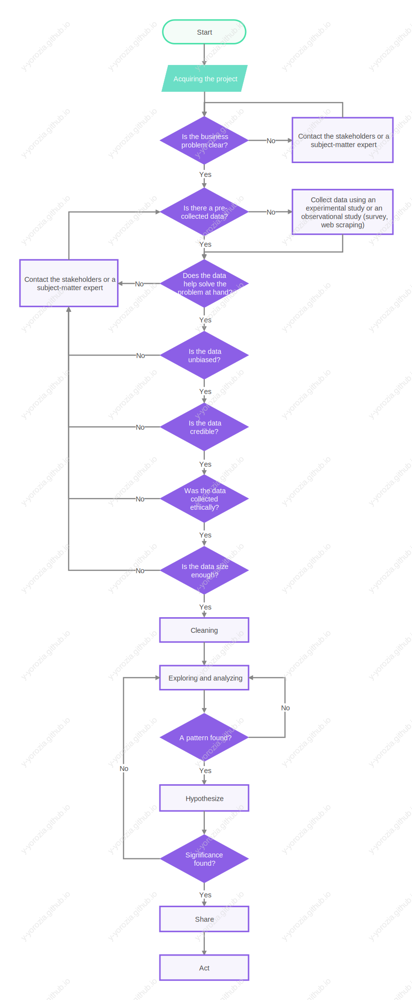

Google Data Analytics
Table of Contents
- 1. Workflow
- 2. Foundations Data, Data, Everywhere
- 3. Ask questions
- 4. Prepare data for Exploration
- 5. Process data
- 6. Analyze to answer questions
- 7. Share data through the art of visualization
- 8. Data analysis with R
1. Workflow

2. Foundations Data, Data, Everywhere
2.1. Introducing data analytics
2.1.1. Get started
2.1.1.1. Get started
- Data is a collection of facts.
- Data analysis is the collection, transformation, and organization of data in order to draw conclusion, make predictions, and drive informed decision making.
- Data analyst is someone who collects, transforms, and organize data in order to help make informed decisions.
- Data analysis processes are: Ask, Prepare, Process, Analyse, Share, and Act.
2.1.1.2. Intorduction to the course
- Data analytics is the science of data
- Data is a collection of facts
2.1.2. Transofrming data into insight
2.1.2.1. Data anayltics in every day life
- Businesses can use data to Improve processes, identify opportunities, launch new products, serve customers, and make thoughtful decisions
2.1.2.2. Dimension of data analytics
- A data analyst is an explorer, a detective, and an artist all rolled into one
- Data science is a broad term that encompasses three distinct roles based on the number of decisions that must be made.
- If you need to make a few decisions, your role is of a statistician, making decision base on statistics.
- If you need to make many decisions, your role is of an AI engineer, making an automation system with good accuracy.
- If you don't know how many decisions you need to take, your role is of an analyst, exploring the data and draw conclusions.
- If you need to make a few decisions, your role is of a statistician, making decision base on statistics.
2.1.3. Data ecosystem
2.1.3.1. What is an ecosystem
- Data ecosystems are elements that interact with each other in order to produce, manage, store, organaze, analyze, and share data.
2.1.3.2. How data inform better decisions
- Data driving decision making is using facts to guide business strategy
- subject matter expert Review the results of data analysis and identify any inconsistencies
2.1.4. Summary
- Data analysis is the use of a data ecosystem to draw conclusions or make decision.
- Data ecosystem are elements that interact with each other to collect, transform, store, organize, analyze, and share data.
- Data ecosystem are elements that interact with each other to collect, transform, store, organize, analyze, and share data.
- Data analyst is someone who uses data analysis and its processes.
- Data analysis process: Ask, prepare, process, analyze, share, and act.
- Ask the subject-matter expert that can find inconsistency and inform you about the business.
- Ask the subject-matter expert that can find inconsistency and inform you about the business.
- Data analysis process: Ask, prepare, process, analyze, share, and act.
- Data science is a broad term that encompasses three distinct roles based on the number of decisions that must be made.
- If you need to make a few decisions, your role is of a statistician, making decision base on statistics.
- If you need to make many decisions, your role is of an AI engineer, making an automation system with good accuracy.
- If you don't know how many decisions you need to take, your role is of an analyst, exploring the data and draw conclusions.
- If you need to make a few decisions, your role is of a statistician, making decision base on statistics.
2.2. All about analytical thinking
2.2.1. Embrace your data skills
2.2.1.1.
2.2.1.2. Key data analytocal skills
- analytical skills is a characteristis or skill associated with solving problems using facts
- there are 5 aspect to this, curiosety, undestanding context, having a technical mindset, data design, data stragey.
2.2.2. Thinking about analytical thihnking
2.2.2.1. all about thinking analyticly
- Analytical thinking identify and define a problem and then solving it using data in an orginize step by step manner
- the five key aspect to analytical thinking: visualiozation, strategy, problem oriontation, correlation, big picture and detail orianted thinkink
2.2.2.2. Exploring core analytial skills
- questions that analyst ask
- What is the root cause of a problem?, to find the root causes keep asking "why?" when an answer is giving
- Where are the gaps in out process? using gap analysis to evaluate processes and determing theri proformance relative to expectation
- What do we not consider before?
- What is the root cause of a problem?, to find the root causes keep asking "why?" when an answer is giving
2.2.3. Think about outcomes
2.2.3.1. Using data to drive sucessful outcomes
2.2.4. Summary
- Skills that data analyst must have:
- Curiosity: wanting new knowledge
- Understanding context: being able to group elements or identify a pattern.
- Having a technical mindset: breaking a problem into pieces to solve each piece logically in order.
- Data design: organizing data to make it easier to retrieve.
- Data strategy: the management of people, processes, and tools used in data analysis.
- Managing people by making sure they know how to use the right data to solve the problem.
- Managing processes by making sure the path to that solution is clear.
- Managing tool by making sure the right technology is being used for the job.
- Managing people by making sure they know how to use the right data to solve the problem.
- Curiosity: wanting new knowledge
- Analytical thinking: identifying a problem and solving it using data.
- Visualization: graphical representation of information can help identify the problem quickly.
- Strategy: determining what you want to achieve with the data.
- Problem orientation: identify, describe, and solve a problem.
- Correlation: identifying correlation between two and more pieces of data.
- Big picture: being able to see the overall problem, similar to keep asking "why?" concept
- Detail oriented: figuring out all the specifics that will help you execute a plan
- Visualization: graphical representation of information can help identify the problem quickly.
- Questions to ask
- Keep asking "why?" until you find the root cause of a problem.
- Is there any gap in the processes? By performing gap analysis,
- What didn't we consider before?
- Keep asking "why?" until you find the root cause of a problem.
2.3. The wonderful world of data
2.3.1. floow the data life cycle
2.3.1.1. Learn about the data phases and tools
- Data analysis tools
- Spreadsheet
- Databases
- Query languages
- Visualization
- Spreadsheet
2.3.1.2. stages of data life cycle
- The data life cycle:
- Planning: What data we need to collect and who will manage it.
- Capture: Data collection
- Manage: Storing, protecting, and maintaining the data.
- Analyze: Analyze the data to solve problems and make decisions.
- Archive: Store the data for use in another time.
- Destroy: Shred the document and data to protect the company privacy.
- Planning: What data we need to collect and who will manage it.
2.3.2. Data analyses process
2.3.2.1. six phases
- phases of data analysis
- Ask: ask the stakeholders (the people who invested in the business) about the ideal state of the business, compare it to the current state and determine problems.
- Prepare: collecting and storing the data.
- Process: Clean the data.
- Analyze: Using tools to transform and organize the data to draw conclusion.
- Share: Share result with others to make decisions with visuals.
- Act: Stakeholder takes a data driven decision-making based on your result.
- Ask: ask the stakeholders (the people who invested in the business) about the ideal state of the business, compare it to the current state and determine problems.
2.3.3. Data analysis toolbox
2.3.3.1. exploring the tools
- data analst tool:
- spreadsheet
- query language
- visualization tool
- spreadsheet
2.4. Setup your toolbox
2.4.1. spredsheet basics
- a highligted row is called observation and all the values of the columns are called attribute
2.4.2. SQL
- a language that halp you store, orginize, and analyze your data
Basiq structure of sql:
SELECT a_columns #2 FROM a_database #1 WHERE a_value_bigger_than_100 #3
2.4.3. Data visualization
- story telling with data
3. Ask questions
3.1. Effective questions
3.1.1. problem solving and effective questioning
- Structured thinking: the process of reconizing the current problem or situation, organizing available information, revealing gaps and opportunities, and identify opinions.
3.1.2. take action with data
3.1.3. Solve problem with data
- common problems type:
- Making predictions: Taking actions based on data-driven predictions
- Finding patterns: using historical timestamp data to find repeating pattern and make predictions.
- Finding patterns: using historical timestamp data to find repeating pattern and make predictions.
- Categorizing things: grouping things with common features together
- Identifying themes: categorizing things in a broader concept.
- Identifying themes: categorizing things in a broader concept.
- Spotting something unusual: identifying outliers in the data.
- Discovering connections: find the activities with problems that affect the activity that we have analyzed.("why?" questions)
- Making predictions: Taking actions based on data-driven predictions
3.1.4. Craft effective questions
- bad questions:
- leadign questions:
- close ended quesions
- to vague or lacking context
- leadign questions:
- affective questions:
- spefic questions are simple, significant and focus on a single topic or few closely related ideas
- measurable questions are quentified and assessed
- action oriented questions encourage change
- relevant quastions "Why?"
- time bound questions
- spefic questions are simple, significant and focus on a single topic or few closely related ideas
3.2. Data drivin decision
3.2.1. understand the power of data
- Data inspired dicision making explores diffirent data sources to find out what they have in common
- quantitative: numetic data
- qualitative categorical data
3.2.2. follow the evidence
- metric are formulat applied on data that give meaning, example Return On Investment
3.2.3. Connecting data with dots
- mathmatical thinking: is thining logicly to solve a problem by making or using a formula and make decision base on the result
3.3. More spreadsheet basics
3.3.1. working with spreadsheet
- work with spreadsheet
- organize the data quickly with
- pivot table
- sort and filter the data
- sort and filter the data
- pivot table
- calculate your data
- organize the data quickly with
- step by step
- select new file
- create a title
- create a folder to save all spreadsheet
- select all spreadsheet and click and drag the horizental borders of a column to make it wider
- select new file
- using function and formulat will save time
3.3.2. Formulas in spreadhseet
- formulas for sucess
- formilas a re build or operators, orperator is a symble that names the type of operation or calculation to be preformed
- to write a formula you start with = fowwowed by the expression/equassioon without any space
- cell reffrence a cell or range of cells in a worksheet that can be used in a formula
- range of cell is the collection of two or more cells
- formilas a re build or operators, orperator is a symble that names the type of operation or calculation to be preformed
- errors
- div/0 error: occure when a formula tyeing to devide by zero or empty cell
- Fix: IFERROR(A1/B1, "not applicable")
- Fix: IFERROR(A1/B1, "not applicable")
- Error!: a formula can't be interpeted as input
- N/A: dat acannot be found, accut when using functuion like vlookup
- NAME?: a formula name isent inderstood
- NUM!: a formula or function calculation can't be preformed as specified
- VALUE!: indecate a problem either in formula or refferecen cell
- REF!: accure when a cell reffrenced in a formula is deleted
- div/0 error: occure when a formula tyeing to devide by zero or empty cell
3.3.3. Functions in spreadsheet
- Functions: a preset command that automaticlly preforms a specific process or task using the data
- Example: sum, everage,min, coun
3.3.4. save time with structural thinking
- before solving the problem understand it
- problem domain: the spesific area of analysis that encoumpess every activity affecting or effected by the problem
- scope of work and structure thining
- Structure thinking is the process of reconizing the current problemor situation, orginizing availible information, revealing gaps and opportunities, and identifiying the options.
- the start place of structural thining is the problem domain
- skope of work (SOK) an agred-upon outline of the work your are going to preform on a project
- Structure thinking is the process of reconizing the current problemor situation, orginizing availible information, revealing gaps and opportunities, and identifiying the options.
- we use data to generate many insight, the value and technical skillincrease by each
- Descriptive : answering "What happend?"
- Diagnostic : answering "Why did it happend?"
- Predictive : answering "What will happend?"
- Prescriptive : answering "How can we make it happend?"
- Descriptive : answering "What happend?"
3.4. Always remember the stakeholder
3.4.1. balance team and stakeholder need
- communicating is key
3.4.2. communucation is key
- write your email profiennly
- be clear about you need like a deadline, "needed by 11/09/2022"
- set a realisting project durration to your stakeholders
3.4.3. Amazing networks
- meeting best practice
- what to do:
- come prepared
- bring the notes you need
- read the meeting egenda
- be ready to answer questions
- bring the notes you need
- be on time
- pay attention
- ask questions
- come prepared
- what to do:
- be objective when a conflict accure
4. Prepare data for Exploration
4.1. Data type and structure
- data exploration
- Collecting data
- How data is collected
- Interview
- Observation (commong amoung scientist)
- Form
- Questionnaires
- Survey
- Cookies
- Interview
- Data collection considerations
- How the data will be collected
- Chose data sources
- First party data: data collected by an individual or a group using their own resources
- Second party data: data collected by a group directly from its audience and then sold
- Third party data: data collected from outside sources who did not collect it directly
- First party data: data collected by an individual or a group using their own resources
- Decide what data to use
- How much data to collect
- Population: all posible data values in a certain dataset
- Sample: a part of a population that is representative of the population
- Population: all posible data values in a certain dataset
- Select the right data type
- Determine time frame
- How the data will be collected
- How data is collected
- Diffirence between data format and structure
- qualitative data cannot be counted, measured or expressed usign numbers
- nominal data: data that is categorize without a set of order ("Yes", "No", "Not sure")
- ordinal data: data that is categorize with a set of order (ranking a movie from one to five)
- nominal data: data that is categorize without a set of order ("Yes", "No", "Not sure")
- Quantitative data can be counted, measured or expressed usign numbers
- Discreate data: data that is counted and have a limited number of value (intiger 1)
- Continuous data: dat athat is measured and can have almost any numeric value (float 1.32)
- Discreate data: data that is counted and have a limited number of value (intiger 1)
- Internal data: a data that lives within a company's own system
- External data: a data that lives and generated outside an organization
- Structured data is data that is organize in a certain format such as rows and columns (spreadsheet, database)
- Unstructured data is data that is not organize in any easily identifiable manner (audio and video file)
- most data generated is unstructered ( audio files, video files, emails, photos, social media)
- structured data works nicel with a data model
- Data model: A model that is used for orginizing data elements and how they relate to one another (SQL PK and FK)
- Data elemsnt: piece of information such as name, email, adrresses, or ID.
- Data elemsnt: piece of information such as name, email, adrresses, or ID.
- qualitative data cannot be counted, measured or expressed usign numbers
- Explore data type field and values
- Data type: a specific type of data attribute that tells what kind of value a data is
- Data type can be a number, string, boolean
Wide data: Data in which every data subject has a single row with multiple columns to hold the values of various attribute of the subject.
Amount sold table
product 2019 2020 2021 2022 A 130 160 177 140 Long date: Data in which each row in one time point per subject, so each subject will have data in multiple rows.
Amount sold table
Product Year Amount A 2019 130 A 2020 160 A 2021 177 A 2022 140
- Data type: a specific type of data attribute that tells what kind of value a data is
4.2. Bias, credibility, ethics, and access
- unbiased and objective data
- analyse data for bias and credibility
- Bias: a prefrance in favor or agains someone, a group of people, or a thing
- Sample bias: when a sample isen't representative of the population
- Observer/ experimenter/ research bias: The tendency for diffirent people to observe things dififrently (dependint on the sentitivity of the device used for mesur)
- Interpretation bias: The tendency to always interpret unclear situations in a positive or negative way.
- Confirmation bias: The tendency to search for or interpret information in a way that confirms pre-existing beliefs.
- Sample bias: when a sample isen't representative of the population
- analyse data for bias and credibility
- Explore data credability
- A good data is data that is:
- Reliable: accurate, complete and unbias information
- Original: check if data is from an original source
- Comperhansive: data need to contain all critical information needed to answer a question of find a solution
- Current: updated data
- Cited: is the source of data cridable
- Reliable: accurate, complete and unbias information
- A good data is data that is:
- Data ethics and privacy
- Ethics: well founded standers or right and wrong that describe what humans oght to do, usually in term of right, obligation, benefits to society, fairness, or specefic virtues.
- Data ethics : well standers of right and wrong that dictate how data is collected, shared, and used.
- GDPR: General Data Protection Regulation of the European union
- Aspects of data ethics:
- Ownership: data iwnership dosent go to the people who collected it, but to the individuals who provide the raw data to be collected.
- Transaction transperency: the algorithm that process the data should be explained by the individuals who provide their data.
- Consent: An indivvisual right to know how and why the data is collected before agreeing to provide it.
- Currency: individuals should be aware of money generated from the use of their data
- Privacy: Preserving a data subjects information and activity any time a data transaction occurs
- Openness: free access, usage, sharing of data after anonymization people identity, it is mostly used in medical indestry
- Ownership: data iwnership dosent go to the people who collected it, but to the individuals who provide the raw data to be collected.
- Ethics: well founded standers or right and wrong that describe what humans oght to do, usually in term of right, obligation, benefits to society, fairness, or specefic virtues.
4.3. data based where data lives
Working with data
- Data base is a collection of data stored in a computer system
- Metadata: is data about data
Data base features:
- Relational database is a database that contains a series of related tables that can be connected via their relashioship
- Primary key: an indentifier that references a column in which each value is unique
- Foreign key: a field within a table that is a primary key in another table
- Data base is a collection of data stored in a computer system
- Managing data with meta data
- there are three stype of metadata:
- Descriptive: Metadata that describe a piece of data and can be used to identify it at a later point in time (a book ISBN).
- Structural: Metadata that indicat how a piece of data is orginized and whether it is part of one, or more than one, data collection (a book table of content).
- Administrative: Metadata that indicate the technical source of a digital asset
- Descriptive: Metadata that describe a piece of data and can be used to identify it at a later point in time (a book ISBN).
- Metadata repository is a database that store metadata
- Data governance: A process to ensure the formal managment of a company's data assets
- there are three stype of metadata:
- Sorting and filtering:
- to freeze a row
- Select the row
- Views -> Freeze => 1 row
- Select the row
- Sorting by multiple columns
- Select the whole dataset
- Data -> Sort range
- Check data has header row
- Click add another sort column if needed
- Select the whole dataset
- Add filter:
- Data -> Create a filter
- Data -> Create a filter
- to freeze a row
- Working with large data in sql with bigquerry
- Bigquery with sandbox account is free
- Go to https://cloud.google.com/bigquery/docs/sandbox
- Click on get started for free
- Click on create project
- how t owork with bigquery
- Click on the menu button
- scroll down to Bigquery => SQL workspace
- Click Add data
- Bigquery with sandbox account is free
4.4. organize and protect the data
- effective orgenize data
- Best practices when orginizing data
- naming convention: consistent guidelines that describe the content, date, or version of the file in its name
- Format date: yyyy-mm-dd (SalesReport20201125)
- Lead version number with zero: SalesReport20201125v02
- Usehyphens, capital letters, underscore instead of space: Sales_Report-2020-11-25_v02
- Format date: yyyy-mm-dd (SalesReport20201125)
- foldering
- archiving older files
- naming convention: consistent guidelines that describe the content, date, or version of the file in its name
- Best practices when orginizing data
- Securing data in spreadsheet
- protecting modification of viwing of the data by unauthorise access
- protecting modification of viwing of the data by unauthorise access
4.5. optional- engaging wit hthe date community
5. Process data
5.1. Importance of integrity
- why data integrity is important
- Data integrity refers to the accuracy and consistency of the data throughout its life cycle.
- Data integrity can be compromised by:
- Data replication: storing data in multiple location
- Data transfer: copying data from storege device to memory or from one computer to another
- Data manipulation: changing data to make it more orginized and easier to read
- hummang error
- viruses
- malware
- hacking
- system failures
- Data replication: storing data in multiple location
- Data integrity refers to the accuracy and consistency of the data throughout its life cycle.
- incefissiont data
- Sometimes the data in hand doesn't give enough information to solve the problem.
- types of insufficient data and hw to deal with it
- if the data from only once source, look for new data
- data that keeps updating, wait or adjust objective (alanyse trend weekly instead of monthly) or wait
- outdated data, find new updated data
- geographicly /group limited data , use unbias data
- if the data from only once source, look for new data
- Sometimes the data in hand doesn't give enough information to solve the problem.
- Testing your data
- statistical terms
- statistical power: the probability of getting meaningful result from a test, statistically sugnificant
- statistically significant mean that the result of the test are not an error caused by randopmness
- hypothesis testing: a way to see if a servey of experiment have a meaningful result
- statistical power: the probability of getting meaningful result from a test, statistically sugnificant
- statistical variables
- \(CI\): Confidance level is the probabilty that your sample size accuratly reflects the greater population, bust it get turned into z-score
- confidence level of 0.95 is 1.95 z-score,
- confidence level of 0.95 is 1.95 z-score,
- \(\epsilon\): Margin of error is how close your sapmple result are to what your result would be if you use the entire population
- \(p\): Population proportion is the population is a binary (meaning we are intrested in people answering yes or no) whar is the percenteg of people answered in one answer, 0.5 for the max number of sample size
- \(N\):Population size the population size
- \(n\): sample size
- \(CI\): Confidance level is the probabilty that your sample size accuratly reflects the greater population, bust it get turned into z-score
- determining the best sample size
- without population \(N\):
- \(n=\cfrac{z^2p(1-p)}{\epsilon^2}\)
- \(n=\cfrac{z^2p(1-p)}{\epsilon^2}\)
- with population \(N\)
- \(n=\cfrac{\cfrac{z^2p(1-p)}{\epsilon^2}}{\cfrac{1+z^2p(1-p)}{\epsilon^2*N}}\)
- \(n=\cfrac{\cfrac{z^2p(1-p)}{\epsilon^2}}{\cfrac{1+z^2p(1-p)}{\epsilon^2*N}}\)
- without population \(N\):
- determining margin of error
- without population \(N\)
- \(\epsilon=\cfrac{z\sqrt{p(1-p)}}{\sqrt{n}}\)
- \(\epsilon=\cfrac{z\sqrt{p(1-p)}}{\sqrt{n}}\)
- with population \(N\)
- \(\epsilon=\cfrac{z\sqrt{p(1-p)}}{\cfrac{n(N-1)}{(N-n)}}\)
- \(\epsilon=\cfrac{z\sqrt{p(1-p)}}{\cfrac{n(N-1)}{(N-n)}}\)
- without population \(N\)
- statistical terms
5.2. sparkling clean data
- data cleaning is a must
- clean it up
- clean data is data that is complete, correct, and relevent to the problem you are trying to solve
- What is needed to be done to the data to be clean?
- Fix typos errors
- Fix inconsistent formating (for spreadsheet)
- blank fields, null
- duplicates
- Fix typos errors
- clean data is data that is complete, correct, and relevent to the problem you are trying to solve
- why data cleaning is important
- sometimes the data you are getting is internal and maintained by the company data enginner and data warehousing soecialist
- data enginners transform the data into a useful format for analysis and give it a reliable infrastructure
- data warehousing specialist develop processes and procedures to effectively store and organize data
- data enginners transform the data into a useful format for analysis and give it a reliable infrastructure
- null indicate that a value dosenot exit in a datset
- sometimes the data you are getting is internal and maintained by the company data enginner and data warehousing soecialist
- reconize dirty data
- typrs of dirty data
- duplicate data
- outdated data
- incomplete data
- inaccurate data
- inconsistent data
- duplicate data
- data validation is a tool for cheching the accuracy and quality of data before adding or importing it
- typrs of dirty data
- clean it up
- begin data cleaning
- data cleaning tools and technique
- always a good practice to make a copy of the dataset
- cleaning data
- remove unwanted data, duplicates, remove them using remove duplicate tool in spreadsheet
- clean up text to remove extra space and blanks
- fix typos
- fixing misspellings
- incostistance capitalization
- incorrect punctuation and other typos
- fixing misspellings
- make formating consistance (only for spreadsheet)
- remove unwanted data, duplicates, remove them using remove duplicate tool in spreadsheet
- always a good practice to make a copy of the dataset
- cleaning data from multiple source
- merger: and agreement that unite two organizations into a single new one
- data mernign: the processs of combining two or more datasets into a single dataset
- the merning will be hard of the two dataset have diffirent ways to put data in columns
- in data analytics, compatibility describe how well two or more datasets are able to work together
- what to ask before merging data
- do i have all the data i need?
- does the data i need exist within those datasets?
- does the datasets need to be cleaned?
- are the datasets cleaned to the same standard?
- do i have all the data i need?
- merger: and agreement that unite two organizations into a single new one
- data cleaning tools and technique
- cleaning data in a spredsheet
- Cleaning data features in spreadhseet
- Conditional formating: a spreadsheet tool that changes how cells apear when value meet specific condition
- select the range you want to search
- Format -> conditional formating
- change the format rule and the style
- select the range you want to search
- remove duplicates: a tool that automaticly search for and eliminate duplicates entries from a spreadsheet
- Data -> remove duplicates
- check data has header row
- Data -> remove duplicates
- make all data consistent:
- Select column
- Foramt -> number -> Date
- Select column
- split text to columns: split is a tool that devide a text around a specific character and put each fragment in a new and seperate cell, it can also fix instence where number is stored as text
- text string is a group of characters within a cell, most often compose of letters
- specified text separator = delimiter
- Select the column
- Data -> split text to columns
- text string is a group of characters within a cell, most often compose of letters
- concatenate: a function that joins multiple text strings into a signle string
- Conditional formating: a spreadsheet tool that changes how cells apear when value meet specific condition
- optimize the data cleaning process
- all functions require a systax: a predetermined structure that include att required information and its proper placment
- COUNTIF: a function that returns the number of cells that match a specific value
- =COUNTFI(range,"value")
- =COUNTFI(range,"value")
- LEN: a function that tells you the lenght of a text string by counting the number of characters it contains
- =LEN(range)
- insert new column
- use the function with the cell adjacent to it
- =LEN(range)
- LEFT: a function that give you a set number of characters from the left side of a text string
- =LEFT(range, number of characters)
- =LEFT(range, number of characters)
- RIGHT: a function that give you a set number of characters from the right side of a text string
- =RIGHT(range, number of characters)
- =RIGHT(range, number of characters)
- MID: a function that give you a segment frmo the middle of a text string
- =MID(range, starting point, number of characters)
- =MID(range, starting point, number of characters)
- CONCATENATE: a function that joins together two or more text string
- =CONCATENATE(item_1, item_2)
- =CONCATENATE(item_1, item_2)
- TRIM is a function that removes leading, trailing, and repeated spaces id data
- all functions require a systax: a predetermined structure that include att required information and its proper placment
- diffirent data prespective and how to do it:
- sorting anf fitleting:
- sorting is arranging data into a meaningful order to make it easier to understand, analyze and visualize, sorting can bring duplicate dogether for faster indentification
- filter is importent in cleaning when yuo want to find a preticulat piece of information
- sorting is arranging data into a meaningful order to make it easier to understand, analyze and visualize, sorting can bring duplicate dogether for faster indentification
- pivot table is a data summerizition tool ised in data processing in cleaning it is used to give you a quick clutter free view on data
- select the whole data
- Data -> pivot table
- New sheet and create
- select the whole data
- VLOOKUP: a function that searches for a certain value in a column to return a coresponding piece of information
- =VLOOKUP(data to lookup, whare to look, column, false"for exact match")
- Visualize
- sorting anf fitleting:
- Even more data cleanning
- one spreadsheet might have NewYork citry spalled as it is, another data base might have it as NY
- Data mapping is the process of matching fields from one data source to another
- data mapping hels us note these defferences
- Schema is a way of describing how somethign is orginize
- one spreadsheet might have NewYork citry spalled as it is, another data base might have it as NY
- Cleaning data features in spreadhseet
5.3. Cleaning data with SQL
using sql to clean
- spreadsheet vs sql
- there are tools that you can use in both spreadsheet and SQL
- arhetmithics
- formulas
- join
- arhetmithics
Spreadsheet SQL Generated with a program A language use to interact with a database program Access to data you input cal pul information from diffirent sources in the dataset Stored locally Stored across a database Small datasets Large datasets working independently track changes ccross team built-in functionallity useful accross multiple programs - spreadsheet vs sql
- Learn bacis SQL querry
- querry is a requst you put in database to ask to to do somethings for you
INSERT
INSERT INTO data_set.data_table (columns1, column2) VALUES (value1,value2)
Update
UPDATE data_set.data_table SET columns1="new_value" WHERE column_id=id_value
- Cleaning string variables
DISTINCT removes duplicates
SELECT DISTINCT column_id FROM data_set.data_table
LENGHT a function that returns the number of characters in a text string (use it to check if a columns that should have a set number of characters in string have otherwise)
SELECT column1 FROM data_set.data_table WHERE LENGHT(column1)>2
SUBSTR return a portion of the string giving a columns, a start point, and how much to extract
SELECT column_id FROM data_set.data_table WHERE SUBSTR(column1,1,2)
TRIM remove extra spaces
SELECT column1 FROM data_set.data_table WHERE TRIM(column1)='OH'
- querry is a requst you put in database to ask to to do somethings for you
- Transforming data
CAST() can be used to convert anything from a data type to another, this process is called typecasting.
SELECT CAST(column1 as FLOAT) FROM data_set.data_table ORDER BY CAST(column1 as FLOAT) DESC
SELECT CAST(date_col as date) as date_only FROM data_set.data_table WHERE date_only BETWEEN "2020-12-01" AND "2020-12-07"
CONCAT() add strings togetherto create new text string
SELECT CONCAT(column1,column2) as con_col FROM data_set.data_table
COALESCE() can be used to return non-null values in a list, if it is given two columns, it will return all values in first columns and replace the nulls frmo columns1 with the adjacent values in column2
SELECT COALESCE(column1,column2) as coalesce_col FROM data_set.data_table
- If a lot of tables are created use DROP TABLE IF EXISTs
5.4. verify and report on your clraning
- manual cleaning data
- verify a process to conferm that the cleaned data is well exicuted resulting in an acurate and reliable data
- change log is a file that contain a chronollogicly ordered list of modiifcations made to a project
- always remeber that the cleaned data, that will be passed foe analysis, should be focused to solve business problem
- finas steps in data cleaning
- if you are using pivot table to samurize and found an error in typos use find and replace, use unique value to see it there is more that it should be
- find and replace a tool that look for specific string and and replace it with somethign else
- Edit -> find and replace
- Edit -> find and replace
Case statement: the case statment goes through one or more conditions and returns a value as soon as the condition is met.
SELECT customer_id, CASE WHEN first_name="Tnoy" THEN "Tony" ELSE first_name END AS cleanned_data FROM data_set.data_table
- if you are using pivot table to samurize and found an error in typos use find and replace, use unique value to see it there is more that it should be
- verify a process to conferm that the cleaned data is well exicuted resulting in an acurate and reliable data
- documenting results and the cleaning process
- documentation, the process of tracking changes, additions, deletions, and errors involved in your data-cleaning effort.
- benifits of documentation
- recover data cleaning errors
- inform other users of changes
- determin the quality of the data
- recover data cleaning errors
- spressheet and sql have an changelog
- documenting data cleaning process for stakeholders, sience they cannot see the changelog
- documentation, the process of tracking changes, additions, deletions, and errors involved in your data-cleaning effort.
6. Analyze to answer questions
6.1. Orginizing data to bigen analysis
- the analysis process
- analysis is the process used to make sense of the data collected
- the four phases of analysis
- Orginize data
- format and adjust data
- get input from others
- transofrm the data
- Orginize data
- analysis is the process used to make sense of the data collected
- Orginize data for analysis
- before analyzing data, use data model to have an overview on what columns are needed acrose multiple data tables for the analysis
- Besure that the data have a good data type
- Sort and filter
- before analyzing data, use data model to have an overview on what columns are needed acrose multiple data tables for the analysis
- Sort data in a spreadsheet
- you can chose to sort sheet or sort range
- There is two ways to sort:
- using a menu:
- Sort sheet: all the data in spreadsheet is sorted by the ranking of a specific sorted column - data across rows is kept together.
- there is no option to select the header
- there is no option to select the header
- Sort range: Nothing else on the spreadsheet is rearranged besides the specified cells in column. unless you select the whole sheet.
- sort range have advanced menu where you can spesify more than one range to sort by
- sort range have advanced menu where you can spesify more than one range to sort by
- Sort sheet: all the data in spreadsheet is sorted by the ranking of a specific sorted column - data across rows is kept together.
- writing a function:
- SORT(table_range,column_number_to_sort_by,asending_status), =SORT(A2:E7,2,TRUE)
- SORT(table_range,column_number_to_sort_by,asending_status), =SORT(A2:E7,2,TRUE)
- using a menu:
- Sort in SQL
- ORDER BY column_name DESC
- ORDER BY column_name DESC
- you can chose to sort sheet or sort range
6.2. Formating and adjusting data
- convert and format data
- In spread sheet you can format number in Format -> number
- CONVERT(value, start_unit, end_unit) to convert mesurment units
- copy and past the columns as special by Right click -> Paste special -> Value only
- copy and past the columns as special by Right click -> Paste special -> Value only
- Data validation function in spreadsheet, it allows you to control what can and cannot be enter in a spreadsheet
- by addig dropdown list with predetermined options
- creating custom checkbox
- protect data structure and formulas
- by addig dropdown list with predetermined options
- Conditional formating is a ways to sytle the cells to be in a sertain color, font and size base of its content
- In spread sheet you can format number in Format -> number
- Combine multiple dataset
- CONTATENATE in spreadsheet and CONCAT in SQL
- LEN RIGHT LEFT
- FIND is a function used to find a string in a text and return it's position to be later used with RIGHT or LEFT
- CONTATENATE in spreadsheet and CONCAT in SQL
- Get support during analysis
- ask your team members for help if you are stuck
- best practices to search online
- thinking skills
- Mental model: your thought process and the way you approach a problem.
- Mental model: your thought process and the way you approach a problem.
- data analytics terms
- leaning how to search for problems with the same language that all analytics use will help you find soulution
- leaning how to search for problems with the same language that all analytics use will help you find soulution
- basic knowledge
- thinking skills
- ask your team members for help if you are stuck
6.3. Aggregating data for analysis
- Vlookup and data aggregating
- aggregation means collecting or gathering many separate peices of information as a whole.
- data aggregation is the process of athering data from multiple sources inorder to combine it into a single summarized collection.
- Data aaggrigation help data analyst to indentify trend, make comparisons, gain insights
- Functions help make data aggrigation possible
- Vlookup
- VALUE() is a function that transform text to numeric
- aggregation means collecting or gathering many separate peices of information as a whole.
- Use join to aggregate data in SQL
- JOIN adds information about a foreign key, from the right table where it is a primary key, to a row.
- JOINs type
- Inner: Returns only rows of the left table if the foreign key exist in right table as a primary key.
- Left and Right: Returns all rows from the left
- if a foreign key in the left table is found in the right table as a primary key, it adds its information to the row,
- if a foreign key in the left table is not found in the right table as a primary key, it adds its nulls to the row,
- if a foreign key in the left table is found in the right table as a primary key, it adds its information to the row,
- Outer: Returns all rows from the left table and the right table
- if a foreign key in the left table is found in the right table as a primary key, it adds its information to the row.
- if a foreign key in the left table is not found in the right table as a primary key, it adds its nulls to the row.
- if a primary key in the right table is not found in the left table as a foreign key, it adds its nulls to the row.
- if a foreign key in the left table is found in the right table as a primary key, it adds its information to the row.
- Inner: Returns only rows of the left table if the foreign key exist in right table as a primary key.
- Count : returns the number of rows in a range
- Count distinc: retunrs the unique values in a range
- Aliasing is naming a table or columns to be easiyer to refrence
- JOIN adds information about a foreign key, from the right table where it is a primary key, to a row.
- Working with subquereys
- a query inside a subquery
- the subquery or the inner query execure first
- Having allow you to add filter to your queery
- CASE akoows you to use if statment
- a query inside a subquery
6.4. Performing data calculation
- get started with data calculation
- COUNTIF
- SUMIF(range_for_condition, condition, range_to_sum)
- SUMPRODUCT(array1,array2,…) multiply arrays and sum the results
- COUNTIF
- Pivot
- Right click on a pivot column, there is an option of pivot date group
- you can add filter
- Calculated field: a fiels that carried out calculation from other fields
- Right click on a pivot column, there is an option of pivot date group
- Learn more SQL calculation
- Operation is a symbol that names the type of calculation to be done in a formula
- addition +
- substration -
- muliplication *
- division /
- modulo % (returns the remainder)
- not equal <>,!=
SQL example
SELECT columnA, columnB, columnA+columnB As columnX FROM data_table
SELECT columnA, columnB, columnC, (columnA+columnB) * columnC As columnX FROM data_table
SELECT columnA, columnB, columnA+columnB As columnX FROM data_table
- aggrucation functions are function tat preform calculation on multiple values and returns a single value
- SAFEDEVIDE help avoid deviding by zero
- GROUPBY is a command that group rows that have the same values from a table into summary rows
- GROUPBY asually paired with an aggrugation function (sum, count,…)
- EXTRACT commend pull on part of date to use
SQL example
SELECT EXTRACT(year from data_col) as year, COUNT(*) As number_of_rides FROM data_table GROUPBY year ORDERBY year DESC
- addition +
- Data validation process: a process that envolve checking and rechecking of your data so that it is complete, accurate, secure, and consistant
- SQL temporary table
- a table that is created and exit termporaraly in data server
WITH clauseh elp creating temporary tables
WITH temp_table AS ( SELECT * FROM DB WHERE col1 <= 60) SELECT count(*) as cnt FROM temp_table
- other statment to create table are
- SELECT INTO,
- CREATE TABLE ( can add meta data)
- with
- SELECT INTO,
- a table that is created and exit termporaraly in data server
- Operation is a symbol that names the type of calculation to be done in a formula
7. Share data through the art of visualization
7.1. Visualizing data
- communicating your data insight
- Understanding visualization
- data visualization is the garphic presentation and representation of data
- data visualization fits alot of information in a small place
- as a data analyst you ll split your time with data visualization in two ways:
- understand and draw conclusion about the data
- telling a story about the data
- understand and draw conclusion about the data
- think about the objectives, patterns and conculions you reach after analysing the data
- For the data visualization to be sucessfull it need (by David McCandless):
- Information - integrity, accuracy, consistency, honnesty
- Story - intresting, relevent, meagninful, new
- Goal - usefulness, useable, fitting, efficent
- Visual form - beauty, structure, appearance
- Information - integrity, accuracy, consistency, honnesty
- A sucessfull data visualization help the views get to the same conclusion you found, but much quicker
- Example of data visualization
- Bar graph: use size contrast to compare two or more values
- x-axis in bar graph usialy represent categories, time periods, and other variables
- y-axix in bar graph usialy represent the scale of values for the variables
- ranked bar chart
- x-axis in bar graph usialy represent categories, time periods, and other variables
- Line graph: help the audience understand shifts or changes in your data
- time series chart
- time series chart
- Pie chart: shows how each part of something make up the whole
- Maps: helps organize data geographically
- Bar graph: use size contrast to compare two or more values
- consider where you want your audiance to focus
- Histogram: a chart that show how often data values fall into certain ranges
- Corelation chars can show relationship among data
- Visualization can be statick or dynamic
- Tableua is ised for dynamic visualization
- the more power you give the user to change chart, the less control you have over telling the story
- data visualization is the garphic presentation and representation of data
- Design data visualization
- Elements of art:
- Line: lines can be curver or straight, thick or thin, horizantal or vertical or diagonal, helps build visual form and structure.
- Shape: need to always be two dimentional, can help add contrast
- Color: can be describe by their hue, intensity, and their value
- Space: the empty area in the graph, usialy between objects
- Movement: done with dynamick graph to change the change of point that heve two coordinance over time
- Line: lines can be curver or straight, thick or thin, horizantal or vertical or diagonal, helps build visual form and structure.
- data visdualization inmpact
- which chart will make it easiyer for the usert to understand the point am trying to make
- comparing data over time:
- line
- area
- bar
- stacked bar
- line
- comparing distinc objects:
- ordered bar
- ordered column
- grouped bar
- ordered bar
- data composition: combining the individual parts in a visualization and displaying them together as a whole.
- stackd bar
- pie
- donut
- treemap
- sstacked area
- stackd bar
- comparing data relationship
- scatter plot
- buuble plot
- column/line
- heatmap
- scatter plot
- Elements for effective visuals
- clear meaning
- sofisticated use of contrast
- refined execution
- clear meaning
- which chart will make it easiyer for the usert to understand the point am trying to make
- Design thinking
- design thinking: a humman centric approach that uses design concept to make it easiyer for people to use and understand tecknologie
- Five stages of design process
- Empathize: knowing and uderstanding the audience strugles, hear loss, color blindness, eye sight (assecibilitys), or truble using or seeing some functions
- Define: define the porblems that need to be solve, in your visual, to make it accesable to the audience
- Ideate: come up with ways to solve the problem
- Prototype: scratch those idea into visuals
- test: get feed back from other people, that preferebly have the same problem as your audience
- Empathize: knowing and uderstanding the audience strugles, hear loss, color blindness, eye sight (assecibilitys), or truble using or seeing some functions
- design thinking: a humman centric approach that uses design concept to make it easiyer for people to use and understand tecknologie
- Exploring visualization considiration
- the audiene will have less question about what you are sharing if you add
- headline: a lines of words printed in large letter at the top of the visualization to communicate what data is bieng presented
- subtitles: suport the headline by addint more context and description
- labels identify the meaning of difirent element in the visualization
- headline: a lines of words printed in large letter at the top of the visualization to communicate what data is bieng presented
- Dona Wong, very good journalist that use visualiztion
- how to make data more accesible
- Labeling
- Text alternatives (provide text alternative to not text content)
- contrest
- limit the reliance of color to distinct information, instead rely on textures
- simplicity
- Labeling
- the audiene will have less question about what you are sharing if you add
- Elements of art:
7.2. creatign data visualization with tableau
- get started with tableau
- looker is also like tableau
- tablea data types are:
- # for numbers
- ABC for strings
- Globe icon for geographic data
- Date
- # for numbers
- looker is also like tableau
- Create vis
- good practice
- diverging color palete: display two range of color values to represent values in a scale
- diverging color palete: display two range of color values to represent values in a scale
- bad coise
- adding alot of labels
- datais clutered
- adding alot of labels
- good practice
- linking
- In tableau you can join/add databases together and utilizing data maping/compability
- you can say which two columns represent the same thn and chage data types to match
- In tableau you can join/add databases together and utilizing data maping/compability
- tableau tools
7.3. creatign data stories
- se data to develop stories
- dashboard is a tool that orginize information from multiple datasets
- data storytelling is communicationg the meaning of a dataset with visuals and a narative that is customize for each particular audience
- data story telling steps
- engaging your audience: captering and holding theire attention
- creating compelling visuals: should thell the audience how the data change over time or highligh the meaning behind the numbers
- tell the story in an intresting narrative
- engaging your audience: captering and holding theire attention
- this about your audience
- what role do they play?
- what is their stake in the project?
- what do they hope to get from the data insights I deliver?
- what role do they play?
- chose your promary message
- spotlightlitnch is scannig through data to quickly identify the most important insight
- dashboard is a tool that orginize information from multiple datasets
- Sharing story
- the narartive needs
- characters: can be stake holder, customers, client and others
- settings: describes what is going on, how ofter it is happening, what tasks are involve, and other background information abot the data project that describe the curren situation
- plot: conflict, is what create tension in the current situation, this could be a challenge from a compaitor, an inneffition process that need to be fixed, or new opportunity
- big reveal: is how the data you show can solve the provlem or the plot
- aha moment: share ercommendation
- characters: can be stake holder, customers, client and others
- how your slide show should look
- themes: it is important to be consistance in colors and font , size to look profisional
- title: describe what ou are about to present
- include date of presentation
- dont include everything you ll say in a writing format
- make about 25 word per slide
- themes: it is important to be consistance in colors and font , size to look profisional
- the narartive needs
7.4. developing presentations and slideshows
- the art and science of an effective presentation
- keep in mind who are your audience and what they need to know
- the framework of your presentation start by understanding the business task
- presentation slide example
- begin by framing business task in a header
- add goals of discussion
- actions to take
- you can start explaning your finding
- add a data overview explaning the data used
- begin by framing business task in a header
- adding note in sliders wont be shown in presentation mode
- work data into presentation
- the McCandless methos
- intreduce the graphic by name (grahp title)
- answer the obvious question that your audience might ask (where dose this data from and what does it cover)
- state the insight of your graph
- call out the data to support that insight (give example of individual point in your data that support your hypothesis)
- tell your audience why it matter
- intreduce the graphic by name (grahp title)
- a messy presentation example
- generic picters
- long title
- not mentening what are we talking about
- putting alot of data and text in one slide
- generic picters
- wat shoud be done
- include title, presenter, data of update
- add a table of content
- purpose of presentation
- (story steps)
- conclusion
- appendix (additional inforamtion about data visuals and data that may not work within the story telling if added)
- purpose of presentation
- some transition slides
- what are we talking about?
- present data
- present just the graph and the title
- as you explain reveal text that summurize your point
- this way you can direct audience attention
- present just the graph and the title
- if the audience see a graph for the first time, explain it
- you cann add questions when presenting a graph that can be answered in the presentation
- what are we talking about?
- include title, presenter, data of update
- keep in mind who are your audience and what they need to know
- presentation skills and prectice
- you have two key responsabilityes
- analyse your data
- present our findings effectivly
- analyse your data
- presentation tips
- channel your exitment
- start with the broader idea
- five second rules
- wait five second after showing the visualization
- ask if they understand it
- wait five second after showing the visualization
- preparation
- channel your exitment
- you have two key responsabilityes
- caviat and limitation to the data
- prepere question that might be asked
- handeling objection about the data, analysis, or the findings
- questions about the data
- questions about the data
- prepere question that might be asked
8. Data analysis with R
8.1. programing and data analysis
8.1.1. the exiting world of programing
8.1.2. programing as a data analyst
- R is a programing language made for statistical purposes
- R is base on a programing language names S
- Good source to learn https://ourcodingclub.github.io/tutorials
- R is good for
- repredusing your analysis
- processing alot of data
- make vesualizaiton
- repredusing your analysis
- R is a data centric programing language
8.1.3. learn programing using rstudio
- Rstudio have four panes, but only three are show on startup
- The fourth pane open when you create/open an R file
- Rstudio have keyboard shortcut
8.2. programing using rstudio
8.2.1. understand basic programing concept
- Functions in R are a body of reusable code used to preform specific tasks in R
- Argument in R is an information that a function in R needs in order to run
- Comment are used to describe or explain a piece of code in your file without being exuceted, a comment start with "#"
- Variable in R is a representation of a value in R that can be stored for use later during programing
- a variable name shoudld star with a letter and can only contain numbers and underscores
assigning symbole for variable is <- instead of =
first_variable <- "this is my variable"
- a variable name shoudld star with a letter and can only contain numbers and underscores
Vector in R represent a group of data elements of the same type stored in a sequence in R (like array in python), to create a vector use the function c()
vect_1 <- c(13, 48, 4)Pipe in R is a tool for expressing a sequance of multiple operations, represented with "%>%", it is use to apply the output of one function into another function.
ToothGrowth %>% filter(dose==0.5)%>% arrange(len)
8.2.2. explore coding in r
- operation in R
- addition +
- substraction -
- division /
- multiplication *
- addition +
8.2.3. learning about r packages
- Rpackages are prieces of repredusable rcodes
- in Rstudio there are "base" packages that are instelled and loaded, and "recommended" package that are installed but not leaded.
- to load a package sue the function library("package name")
- Tidyverse a system of packages in R with a common design philosophy for data manipulation, exploration, and visualization.
- you can install Tidyverse from Rstuduo gui or from terminal with install.packages("tidyverse")
- load Tidyverse with library(tidyverse)
- when lardign you ight see a conflict error, it happend when a package have function with the same name as other functions
- eight code packages of tidyverse are:
- ggplot2
- tibble
- tidyr
- readr
- purrr
- dplyr
- stringr
- forcats
- ggplot2
- you can install Tidyverse from Rstuduo gui or from terminal with install.packages("tidyverse")
8.2.4. explore the tidyverse
- there are eight core packages of tidyverse and among them four of them are essential:
- readr (essential): used for importing data
- tidyr (essential): package used for data cleaning
- dplyr (essential): offer multiple functioon that helps with data manipulation
- ggplot2 (essential): create data visualization
- tibble: work with dataframes
- purrr: helps with vector and functions
- stringr: include cunctions that works with strings
- forcats: solve problems with factors
- readr (essential): used for importing data
- Factors in R is a group of categorical data whare the data values are limited.
- Pipes in R, there are three ways you can work with data in R
Variables
data("ToothGrowth") filtred_data <- filter(ToothGrowth,dose==0.5) arrange(filtred_data,len)
Nested functions
data("ToothGrowth") arrange(filter(ToothGrowth,dose==0.5),len)Pipes (Ctrl+Shift+M will insert %>%)
data("ToothGrowth") pipe_filter_data<- ToothGrowth %>% filter(dose==0.5) %>% arrange(len)
8.3. working with data in r
8.3.1. explore the data and r
- Dataframe is a collection of columns
- in a dataframe columns should be names and all columns shoud have the same lenght
- in a dataframe columns should be names and all columns shoud have the same lenght
- Tibble is like streamlines dataframes, but they are diffirent from dataframes
- tibble never change the datatype of the inputs
- tibble never change the names of the variables
- never create row names
- makes printing in R easiyer (automaticle print 10 rows) by using the fucnction head()
- tibble never change the datatype of the inputs
- str(dataframe) return the structure of the dataframe
- colnames(dataframe) return the column name of the dataframe
- mutate(dataframe,new_col=old_col*100) create a new column in the dataframe base on vector
8.3.2. cleaning data
- packages to install for cleaning
- Here: make refrencing files easiyer
- Skimr: makes summerizing the data easy
- Janitor: have functions for leaning data
- Here: make refrencing files easiyer
- functions to use to get summerys from out dataframe
skim_without_charts() returns a data summery (number of rows, columns, and information about column types)
library(skimr) skim_without_charts(penguins)- glimpse() return data live the function View() or head() but in horizental format
- head() return 10 rows of the data
select() select a subset of the dataframe columns
# include year column penguins %>% select(year) # exclude year column penguins %>% select(-year)
remane() allow you to rename column in a dataframe
penguins %>% rename(new_col_name=old_col_name)rename_with() changes the column name to be consistante
rename_with(penguins,tolower)
clean_names() ensures that there is only characters, number, and underscores in columns names, from janitor package
clean_names(penguins)
- fucntions that helps orginize and filter your data
arrange() for sorting, add - for descending
# Ascending penguins %>% arrange(bill_length_mm) # Descending penguins %>% arrange(-bill_length_mm)
group_by() us a function that usialy paird with a summerize function, you can use drop_na()
data %>% group_by(col_name_to_groupby) %>% drop_na() %>% summarise(new_col_name=operator(col_name))
penguins %>% group_by(island) %>% drop_na() %>% summarise(new_col=mean(bill_length_mm))
penguins %>% group_by(island) %>% drop_na() %>% summarise(mean(bill_length_mm))
groupe multiple columns and get multiple summeries
penguins %>% group_by(species,island) %>% drop_na() %>% summarise(max_col=max(bill_length_mm),mean_col=mean(bill_length_mm))
filter() hide some data
penguins %>% filter(species=="Adelie")
- Transforming data
seperate() it split string inside a column base a seperator, remove the column, and create new columns
separate(data,col,into = c("n_col_1","n_col_2"), sep=' ')
unite() does the oposide of seperate
unite(data,"n_col",col_1,col_2, sep=' ')
mutate() add/create columns with calculation
penguins %>% mutate(body_mass_kg=body_mass_g/1000,flipper_lenght_m=flipper_length_mm/1000)
8.3.3. take a closer look at the data
- while summerization give us an overview about the data visualization help us understand more
- bias is function that comes from SimDesign, its purpose is to mesure if the predictions are close to the actual values
- bias mesure The average difference between the actual and predicted values
8.4. more about visualization, asthetic and annotation
8.4.1. create data visualization in r
- aesthetics are visual property of an object in your plot
- geom is the geometric object used to represent your data
- facets let you display smaller group, or subsets, of your data
- labels and annotation let you customize your plot
- Syntax to build a graph
Base
ggplot(data=<DATA>) + <GEOM_FUNCTION>(mapping=aes(<MAPPINGS>))
Full
ggplot(data=<DATA>) + <GEOM_FUNCTION>(mapping=aes(<MAPPINGS>),stat=<STAT>,position=<POSITION>) + <COORDINATE_FUNCTION> + <FACET_FUNCTION> + <SCALE_FUNCTION> + <THEME_FUNCTION>
Example:
ggplot(data=penguins) + geom_point(mapping = aes(x=flipper_length_mm,y=body_mass_g),shape=21,color="red")
8.4.2. explore aesthetics in analysis
we can map a new variable to a new aesthatic by addint "color" inside aes function - map aesthatic to variables
ggplot(data=penguins)+ geom_point(mapping = aes(x=flipper_length_mm,y=body_mass_g,color=species))
if you want to add new aesthetic that dosent effect certain point base on their data but effect all the point add it after the aesthetic function - map aesthatic to all elements
ggplot(data=penguins)+ geom_point(mapping = aes(x=flipper_length_mm,y=body_mass_g),color="purple")you can add a plot ontop of another by addint + in between them
ggplot(data=penguins)+ geom_smooth(mapping = aes(x=flipper_length_mm,y=body_mass_g))+ geom_point(mapping = aes(x=flipper_length_mm,y=body_mass_g),alpha=0.2)
- facet let you display subset of your data
facet_wrap facet by a single variable
ggplot(data=penguins)+ geom_point(mapping = aes(x=flipper_length_mm,y=body_mass_g,color=species))+ facet_wrap(~island)
facet_grid facet by multiple variables
ggplot(data=penguins)+ geom_point(mapping = aes(x=flipper_length_mm,y=body_mass_g,color=species))+ facet_grid(sex~island) # get the same result as facet wrap ggplot(data=penguins)+ geom_point(mapping = aes(x=flipper_length_mm,y=body_mass_g,color=species))+ facet_grid(~island)
8.4.3. annotate and save visualization
addig title
ggplot(data=penguins)+ geom_point(mapping = aes(x=flipper_length_mm,y=body_mass_g,color=species))+ labs(title = "this is a title",subtitle = "this is a subtitle")
annotation are text in the graph whit its location base on the coordinate from x and y axis
ggplot(data=penguins)+ geom_point(mapping = aes(x=flipper_length_mm,y=body_mass_g,color=species))+ labs(title = "this is a title",subtitle = "this is a subtitle")+ annotate(geom = "text",x=210,y=3000,label="annotation")
8.5. Documentation and reports
8.5.1. Develop documentation and report in r studio
- R markdown is a file format to make dynamic documents in R
8.5.2. create r markdown document
- install package -> click create new rmarkdown file -> click on Knit
8.5.3. understand code chunks and expor
- you can add code chunks bt clickigng Ctrl+Alt+i or click on the green buton on top